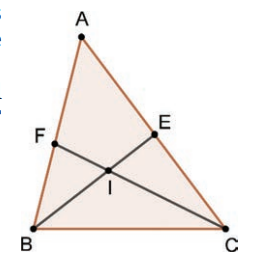
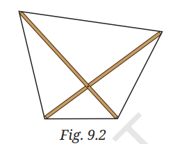

Class 9 Ganita Manjari Part 2 · notes, exercises and mini test.
Learning map
What you should be able to do
By the end of this chapter, you should be able to identify a proposition, separate its hypothesis and conclusion, state its converse, decide whether each statement is true, and support your decision with a deductive proof or a valid counterexample.
IdentifyRecognise a statement that has a definite truth value and separate condition P from conclusion Q.
ReverseSwap condition P and conclusion Q to construct the converse statement.
Test & ProveProvide a general mathematical proof for true claims; provide a single counterexample to disprove false ones.
ConnectUnderstand necessary, sufficient, and “if and only if” (iff) relationships.
Study tip: Always rewrite any sentence into If P, then Q form before judging its truth or forming its converse.
1Propositions and Their Converses
Consider the following two statements from geometry:
Statement 1: If two sides of a triangle are equal, then the angles opposite the equal sides are equal. Statement 2: If two angles of a triangle are equal, then the sides opposite the equal angles have equal lengths.
Such a statement that is either definitely true or false is called a proposition. A sentence that expresses a command, a question, or a subjective feeling is not a proposition because it cannot be assigned a single truth value.
“If two lines are parallel, then corresponding angles formed by a transversal are equal.” — proposition (true).
“What a beautiful triangle!” — not a proposition (an opinion or exclamation has no truth value).
“Construct an equilateral triangle.” — not a proposition (an instruction/command).
If X, then Y↔X implies Y
In this statement, X is the hypothesis (condition) and Y is the conclusion (result). We will use ‘If X then Y’ and ‘X implies Y’ interchangeably.
Notice that Statement 1 is of the form ‘if X then Y’, whereas Statement 2 is of the form ‘if Y then X’. We say that the second proposition is the converse of the first proposition.
2Geometric Proof: Converse of Statement 1
We proved Statement 1 (the Isosceles Triangle Theorem) in an earlier grade. Is the second statement (its converse) true? Can we prove it? Yes!
Converse Statement: In ΔABC, if ∠B = ∠C, then the opposite sides are equal: AB = AC. Hint from textbook: Draw the altitude from the vertex containing the third angle.
Step-by-step Proof:
Given: ΔABC in which ∠B = ∠C.
To Prove: AB = AC.
Construction: Draw altitude AD ⊥ BC from the third vertex A, meeting base BC at point D.
Compare ΔABD and ΔACD:
∠B = ∠C (Given)
∠ADB = ∠ADC = 90° (By construction, since AD ⊥ BC)
AD = AD (Common side to both right triangles)
Congruence: By the AAS (Angle-Angle-Side) Congruence Criterion, ΔABD ≅ ΔACD.
Conclusion: Since corresponding parts of congruent triangles are equal (CPCTC), we get AB = AC.
Conclusion: The converse of the Isosceles Triangle Theorem is True!
3Rewriting and Forming Converses
Phrases like when, whenever, and implies can disguise the direction of a proposition. Always identify the condition first and rephrase into standard if–then form:
Original Proposition (P): If X, then Y Converse (Q) → Converse Proposition (Q): If Y, then X
Example: “A quadrilateral has four equal angles if it is a square.” Rewritten: If a quadrilateral is a square, then all its angles are equal. Its converse is: If all the angles of a quadrilateral are equal, then it is a square.
Crucial Reminder: The converse is an entirely new mathematical claim. If a proposition is true, its converse is not necessarily true. Both statements must always be evaluated separately!
4Proofs, Counterexamples, and Fermat’s Conjecture
To establish that a universal proposition is trueYou must supply a general deductive proof that holds for every allowed case. A handful of working examples is never sufficient.
To show that a proposition is falseA single counterexample — a case where hypothesis X is satisfied but conclusion Y fails — immediately refutes the proposition.
Euler’s Refutation of Fermat’s Claim
Finding a suitable counterexample is an indispensable part of mathematics. Pierre de Fermat famously conjectured that all numbers of the form 22n + 1 are prime for n = 0, 1, 2, 3, …:
The Counterexample: In 1732, Leonhard Euler computed the value for n = 5 and showed that: 225 + 1 = 232 + 1 = 4,294,967,297 = 641 × 6,700,417 This single composite counterexample completely disproved Fermat's conjecture!
Helpful Proof Method — Contrapositive: The proposition ‘If X, then Y’ is logically equivalent to its contrapositive ‘If not Y, then not X’. Proving the contrapositive is often easier when dealing with divisibility and uniqueness.
5Textbook Solved Examples (1 to 5)
Example 1: Real-life Proposition & Converse
Proposition P If it rains, then the road is wet. True Converse Q If the road is wet, then it has rained. False Counterexample: The road may be wet because a municipal water tanker washed the street or someone spilled water. A true proposition can have a false converse.
Example 2: Multiples of 6 and 3
Proposition P If a number is a multiple of 6, then it is a multiple of 3. True Justification: Any multiple of 6 is n = 6k = 3(2k), which is divisible by 3. Converse Q If a number is a multiple of 3, then it is a multiple of 6. False Counterexample: 9 is a multiple of 3 (3 × 3 = 9), but 9 is not a multiple of 6. (Other counterexamples: 15, 21, 27, 33).
Example 3: Square Numbers and Factors (In-Depth Discussion & Proof)
Proposition P If n is a perfect square, then it has an odd number of factors. Converse Q If n has an odd number of factors, then it is a perfect square. Verdict: Both Statement P and Converse Q are True (P ⇔ Q).
Discussion and Proof using Factor-Partner Pairs:
Each factor of a number has a ‘partner’ factor such that their product yields the given number (e.g., for 35, 5 × 7 = 35, so 5 and 7 are partners). For 12, the pairs are (1, 12), (2, 6), (3, 4). Because each pair contains two distinct factors, non-square numbers always have an even number of factors.
If a number has an odd number of factors, there must be a factor-partner pair in which the same number repeats: (f, f), meaning f × f = n. Thus, n must be a perfect square. (This proves Converse Q!)
Conversely, if n is a perfect square, can it have more than one repeating pair? No, because a positive integer has only one positive square root. All its other factors pair up into distinct (a, b) with a ≠ b. Thus, exactly one factor (f) stands alone, meaning n necessarily has an odd number of factors. (This proves Proposition P!)
Example 4: Triangle Area vs. Congruence
Proposition P If two triangles have the same area, then they are congruent. False Counterexample: Triangle T1 with base 4 cm and height 3 cm has Area = ½ × 4 × 3 = 6 cm2. Triangle T2 with base 6 cm and height 2 cm has Area = ½ × 6 × 2 = 6 cm2. Both triangles have area 6 cm2, but their shapes and side lengths are completely different, so they are not congruent. Converse Q If two triangles are congruent, then they have the same area. True Justification: Congruent triangles have identical side lengths and heights; when superposed, they coincide exactly, so their areas are identical.
Example 5: Baudhāyana–Pythagoras Theorem & Its Converse
Baudhāyana–Pythagoras Theorem: Let a, b, c be the sidelengths of a triangle. If the triangle is right-angled (with hypotenuse c), then a2 + b2 = c2. True Converse: Let a, b, c be the sidelengths of a triangle. If a2 + b2 = c2, then the triangle is right-angled. True
Proof of the Converse:
Let ΔABC have sidelengths BC = a, AC = b, and AB = c such that a2 + b2 = c2.
Construction: Construct a second triangle ΔXYZ such that ∠Z = 90°, YZ = a, and XZ = b.
By the Baudhāyana–Pythagoras Theorem on right-angled ΔXYZ: XY2 = YZ2 + XZ2 = a2 + b2 Since a2 + b2 = c2, we have XY2 = c2, which gives XY = c.
Now compare ΔABC and ΔXYZ:
BC = YZ = a
AC = XZ = b
AB = XY = c
By the SSS (Side-Side-Side) Congruence Criterion, ΔABC ≅ ΔXYZ.
Corresponding angles of congruent triangles are equal (CPCTC), so ∠C = ∠Z = 90°.
Hence ΔABC is a right-angled triangle. The converse of the Baudhāyana–Pythagoras theorem is True!
6Necessary, Sufficient, and “If and Only If”
If P &implies; Q, then P is a sufficient condition for Q: satisfying P is enough to guarantee Q.
In the same statement, Q is a necessary condition for P: P cannot happen without Q.
If both P &implies; Q and Q &implies; P are true, we write P if and only if Q (P ⇔ Q, or P iff Q). Either condition can be used to test the other.
Example: A number is divisible by 3 if and only if the sum of its digits is a multiple of 3. Both the original proposition and its converse are true.
7Think & Reflect: Exploring All Possibilities
1. Can both a proposition and its converse be false?
Yes! Both P and Q can be false simultaneously:
Number Theory: Proposition P: “If a number is divisible by 4, then it is an odd number.” False (4 is divisible by 4, but even). Converse Q: “If a number is an odd number, then it is divisible by 4.” False (5 is odd, but not divisible by 4).
Geometry: Proposition P: “If a quadrilateral has four equal sides, then it has four equal angles.” False (A rhombus has 4 equal sides, but its angles need not be 90°). Converse Q: “If a quadrilateral has four equal angles, then it has four equal sides.” False (A rectangle has 4 equal 90° angles, but its adjacent sides need not be equal).
Proposition P: If a person is in New Delhi, then they are in India. True Converse Q: If a person is in India, then they are in New Delhi. False Counterexample: A person in Bengaluru or Kolkata is in India, but not in New Delhi.
3. Further Geometry & Number Theory Examples
Geometry: “If a quadrilateral is a square, then it is a rectangle.” True. Converse: “If a quadrilateral is a rectangle, then it is a square.” False (Counterexample: a 3 cm × 5 cm rectangle).
Number Theory: “If a number is a multiple of 10, then it is a multiple of 5.” True. Converse: “If a number is a multiple of 5, then it is a multiple of 10.” False (Counterexample: 15, 25, 35).
8The Four Truth Value Combinations
As demonstrated throughout this chapter, a proposition and its converse can exhibit all four possible truth value combinations:
Combination
Proposition (P)
Converse (Q)
Textbook Example
Case 1
True
False
If a number is a multiple of 6, it is a multiple of 3 (Converse fails for 9).
Case 2
False
True
If two triangles have equal area, they are congruent (Converse holds).
Case 3
True
True
Baudhāyana–Pythagoras Theorem; n is a square ⇔ n has odd factors.
Case 4
False
False
If a number is divisible by 4, it is odd (both statements fail).
9Equivalent Textbook Wording
“If a number is a perfect square, then it has an odd number of factors.” “A number has an odd number of factors when it is a perfect square.”
Both sentences above express the exact same proposition. The word when in English specifies the condition; it does not reverse the direction into a converse.
Exercise Set 9.1 - Solutions
Exercise Set 9.1 Frame the converse for each of the propositions in Questions 1-12. Then, determine if each of the two statements is true or not. Justify the true statements and give a counterexample for each false statement.
1If two lines are parallel, then the corresponding angles formed by a transversal are equal.
Proposition True
When two parallel lines are cut by a transversal, corresponding angles are equal.
Converse: If corresponding angles formed by a transversal are equal, then the two lines are parallel. True - equal corresponding angles is the test for parallel lines.
Proposition and converse are both true.
2If a quadrilateral is a square, then all its angles are equal.
True
A square has four right angles.
Converse: If all the angles of a quadrilateral are equal, then it is a square. False Counterexample: a rectangle which is not a square has four equal angles.
*3Given any ΔABC, let us bisect the angles at B and C. The bisectors meet at the incentre I of the triangle. Now extend the bisectors beyond I till they meet the opposite sides at E and F respectively, as shown. Proposition: If AB = AC, then IE = IF. (Fig. 9.1)

Fig. 9.1
Proposition True
Proof of Proposition:
If AB = AC, then ΔABC is isosceles with ∠ABC = ∠ACB (angles opposite equal sides are equal).
Since BE and CF are angle bisectors: ∠IBC = ½∠ABC and ∠ICB = ½∠ACB. Therefore, ∠IBC = ∠ICB.
In ΔIBC, since base angles are equal, the opposite sides are equal: IB = IC.
Now in ΔFBC and ΔECB: ∠FBC = ∠ECB (∠B = ∠C), side BC is common, and ∠FCB = ∠EBC. By ASA congruence, ΔFBC ≅ ΔECB, which implies the total bisector segments are equal: BE = CF.
Subtracting IB = IC from BE = CF gives: IE = BE - IB = CF - IC = IF. Hence, IE = IF.
Converse: If IE = IF, then AB = AC. True By the angle-bisector theorem and the symmetry of the figure with respect to the incenter I, the condition IE = IF forces ∠B = ∠C, which implies AB = AC.
4If x = y, then a + x = a + y, where x, y and a are any three numbers. This proposition and its converse are routinely used while solving equations.
True
Adding the same number a to equal numbers keeps them equal.
Converse: If a + x = a + y, then x = y. True - subtract a from both sides.
5If a and b are perfect squares, then ab is a perfect square.
True
Let a = m2 and b = n2. Then ab = (mn)2.
Converse: If ab is a perfect square, then a and b are perfect squares. False Counterexample: a = 2, b = 8. Then ab = 16, which is a perfect square, but neither 2 nor 8 is a perfect square.
In Questions 6 and 7, x and y are real numbers.
6If x = y, then x2 = y2.
True
If two numbers are equal, their squares are equal.
Converse: If x2 = y2, then x = y. False Counterexample: x = 3, y = -3. Then x2 = y2 = 9, but x is not equal to y.
7If x = y, then x3 = y3.
True
If two numbers are equal, their cubes are equal.
Converse: If x3 = y3, then x = y. True for real numbers.
In Questions 8-12, n is a positive integer.
8If n is divisible by 24, then it is divisible by both 4 and 6.
True
24 = 4 x 6. If n = 24k, then n = 4(6k) and n = 6(4k).
Converse: If n is divisible by 4 and 6, then n is divisible by 24. False Counterexample: n = 12 is divisible by 4 and 6, but 12 is not divisible by 24.
9If n is divisible by 60, then it is divisible by both 5 and 12.
True
60 = 5 x 12. The same argument as Q8 applies.
Converse: If n is divisible by 5 and 12, then n is divisible by 60. True - since 5 and 12 have no common factor, a common multiple is a multiple of 60.
10If n is the square of a prime number, then it has exactly 3 factors.
True
If n = p2, the factors are 1, p and p2 only.
Converse: If n has exactly 3 factors, then it is the square of a prime. True
11If n is a product of two unequal prime numbers, then it has exactly 4 divisors.
True
If n = p x q, the divisors are 1, p, q and pq.
Converse: If n has exactly 4 divisors, then it is a product of two unequal primes. False Counterexample: n = 8 has divisors 1, 2, 4 and 8.
12If n and n + 3 have no factors in common, then n is not a multiple of 3.
True
If n = 3k, then n + 3 = 3(k + 1), so 3 divides both. Hence if n and n + 3 have no common factor, n cannot be a multiple of 3.
Converse: If n is not a multiple of 3, then n and n + 3 have no common factor. True - any common divisor of n and n + 3 divides 3.
13There are no known 'neat' expressions that generate only primes! Find counterexamples to the following claims. (i) All numbers of the form 4n2 + 1 are prime. (ii) All numbers of the form n2 + n + 11 are prime. (iii) All numbers of the form 4n + 3 are prime.
(i) n = 6 gives 4 x 36 + 1 = 145 = 5 x 29.
(ii) n = 11 gives 121 + 11 + 11 = 143 = 11 x 13.
(iii) n = 4 gives 256 + 3 = 259 = 7 x 37.
14Find counterexamples to the following statements. (i) If n is a prime number, then 2n - 1 is a prime number. (ii) If n is an even number, then 2n + 1 is a prime number.
(i) False. n = 11 is prime, but 2^11 - 1 = 2047 = 23 x 89.
(ii) False. n = 6 is even, but 2^6 + 1 = 65 = 5 x 13.
15Consider the statement: 'If a number is divisible by 8, then it is divisible by both 2 and 4'. (i) Justify the statement. (ii) Recall the divisibility shortcuts that we have studied for different numbers. To check whether a given number is divisible by 8, is it enough to check whether it is divisible by 2 and 4? Why or why not?
(i) True. If n = 8k, then n = 2(4k) and n = 4(2k).
(ii) No. 12 is divisible by 2 and 4, but 12 is not divisible by 8. So checking 2 and 4 is not enough for 8.
16Recall that a shortcut to check whether a given number is divisible by 3 is to add the digits of the number and check if the sum is a multiple of 3. Express the relationship between 'a number is divisible by 3' and 'sum of the digits is a multiple of 3' using 'If-then' sentences.
Both statements are true:
If a number is divisible by 3, then the sum of its digits is a multiple of 3. If the sum of the digits is a multiple of 3, then the number is divisible by 3.
So either can be used to test the other. This is an if and only if (iff).
17We have identified different types of quadrilaterals — squares, rectangles, parallelograms, rhombi, kites and trapezia. One can identify more types (e.g., we could create a category of quadrilaterals that have equal-length opposite sides).
Suppose we have identified a category of quadrilaterals called Q, and we have to construct a quadrilateral of this type. For this, we are to use two thin sticks, put them together as diagonals so that the quadrilateral obtained by joining their endpoints is of type Q (see the Fig. 9.2).

Fig. 9.2(i) Suppose Q satisfies the following property: If a quadrilateral is of type Q, then it has equal-length diagonals. (a) Should the two sticks be of equal length? Why or why not? (b) Will it matter how the two sticks are put together?
(ii) Instead of the property mentioned above, suppose Q satisfies the following property: If a quadrilateral has equal diagonals, then it is of type Q. What will be your answers to (a) and (b) now?
(i) Given Property:If a quadrilateral is of type Q, then it has equal-length diagonals.
This states that having equal diagonals is a necessary condition for a quadrilateral to be of type Q.
(a) Should the two sticks be of equal length? Why or why not? Yes. Since the sticks form the diagonals, and every quadrilateral in category Q must possess equal diagonals, the two sticks must be of equal length. If they were unequal, the resulting quadrilateral could never be of type Q.
(b) Will it matter how the two sticks are put together? Yes, it will matter. Having equal diagonals is necessary, but not sufficient. Just crossing two equal sticks does not ensure the figure will be of type Q. For instance, if type Q is a rectangle, the sticks must bisect each other; if type Q is a square, they must bisect each other perpendicularly. The angle and the point where they cross are critical.
(ii) Given Property:If a quadrilateral has equal diagonals, then it is of type Q.
This states that having equal diagonals is a sufficient condition for being of type Q.
(a) Should the two sticks be of equal length? Yes. By using two sticks of equal length, we guarantee that the constructed quadrilateral has equal diagonals, which satisfies the hypothesis.
(b) Will it matter how the two sticks are put together? No, it will not matter. Under this proposition, any quadrilateral having equal diagonals is guaranteed to be of type Q, regardless of the angle at which the sticks cross or whether they bisect each other.
Summary
A proposition is a statement that is true or false.
The converse of "if P, then Q" is "if Q, then P".
A true proposition can have a false converse.
One counterexample is enough to show a statement is false.
Worksheets
Open a level. Answers are hidden.
Level 1 - Foundation (8 Q)
1. Rewrite in If-then: “A number has odd factors when it is a perfect square.”
If a number is a perfect square, then it has an odd number of factors. P=perfect square, Q=odd factors.
2. Write converse: If x=y then x2=y2.
If x2=y2 then x=y. False (x = 3, y = -3).
3. True/False: If a quadrilateral is a square then all angles equal.
True. A square has four right angles.
4. Give counterexample: “All numbers n2+n+11 are prime.”
n=10: 100+10+11=121=11x11 composite.
5. Is “Wow, big triangle!” a proposition?
No - opinion, not true/false.
6. Converse of: If n divisible by 24 then divisible by 4.
If n divisible by 4 then divisible by 24. False (for example, n = 4).
7. If AB=AC then IE=IF - name P and Q.
P: AB=AC, Q: IE=IF.
8. True/False: If x=y then x3=y3.
True.
Level 2 - Application (8 Q)
1. a,b squares => ab square. Converse? Verdict?
Converse: ab square => a,b squares. False. For example, a = 2, b = 8 gives ab = 16.